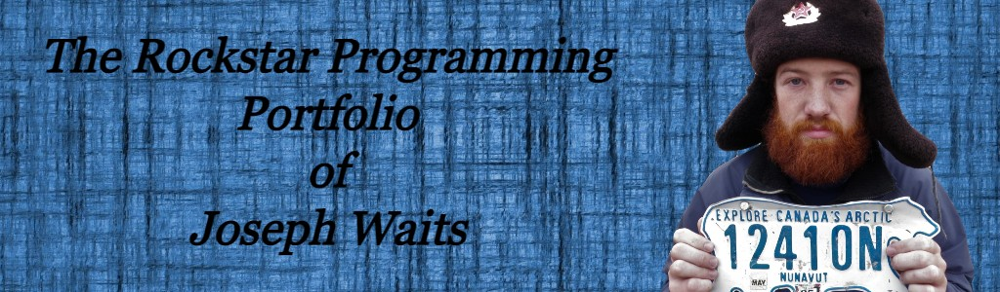

JAVASCRIPTS!
Javascripts. Javascripts. Javascripts. Do you like Javascripts? Javascripts. JAVASCRIPTS!!
¡¡¡¡¡¡¡¡¡¡¡JAVASCRIPTS!!!!!!!!!
Documented Inconvenient Discrepancies
- Week 1: "Once you have completed all the required items for you web page, you should include the label
8 Programming Portfolio Website Link." Sound confusing? It is. It was later
acknowledged that "8 Programming" was a typo.
- Week 1: Javascripts directions are a bit ambiguous. First, it says add a descriptive
paragraph. Then, it says leave it blank. Add a paragraph? Or leave it blank?
- Week 2: On step 1, it says to do Khan and W3Cschool material. W3Cschools??? Where did that come from?
And, what material are you talking about? Is there something I'm missing?
- Week 2: This one might be the most frustrating of all. On the course materials page on Brightspace, there were
various links for Pixlr tutorials, two of which were went nowhere. One kept arriving at YouTube saying "Private Video," and
the other said, "YouTube refused to connect." What a waste of time.
- Week 2: Why is there a Step 3: Create a Web Server Account on Github Pages written? Shouldn't it be assumed that has
already occurred? Clean up the instructions.
- Week 2: On step 4, it goes on to mention Steps 2(a), (c), and (d). However, there are NO Steps 2(a), or (c), or (d) to
be found. It's like my what my 9th grade English teacher said in regard to outlines: "You can't have an 'A' without a 'B.'
You can't have a 1 without 2." To put this into Computer Science language, these are broken links.
Stay tuned for more adventures in "Documented Inconvenient Discrepancies."